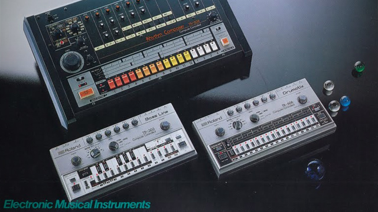
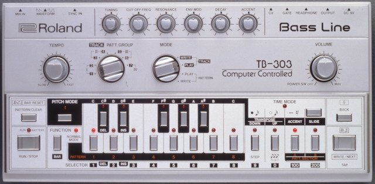

The History Of Roland TB-303
How did the TB-303 bass synthesizer become such a well-known and highly regarded sound in dance music? Today guest contributor Akhil Kalepu goes in-depth with the full history of the Roland TB-303 and how its shortcomings became some of the most sought after sounds in the era of acid house that followed.
- Featured gear: TB-303
- Manufacturer: Roland
- Date Released: 1982(production ended 1984)
In a world of software emulations digital workstation, it’s hard to be impressed by a single oscillator monosynth, but few electronic musical instruments have made an impact as big as the TB-303. Several machines have entered electronic music history as pivotal artifacts of the culture. Released in 1982, Roland’s “Transistor Bass” unit was a sleeper hit that became an iconic piece of electronic music culture, analogous to the Stratocaster for rock and the MPC for hip-hop.
Created by Roland engineer Tadao Kikumoto, the box was largely written off as a failure after just 18 months of production. It was released alongside the TR-606 drum machine as an accompaniment for guitarists, but with unrealistic sounds and a difficult interface the box got little traction upon release. Roland stopped production in 1984, having sold only 10,000 units.
